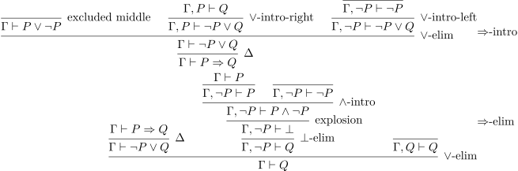

Γ ⊢ formal logic and type systems
Note: This post is quite long, it is not finished and I might end up splitting into multiple parts in the end. A lot of thing I want to put in are already there, but some, like normalization proofs and human-usable variable references are missing. Read at your own Peril
- Justin
If like me, you are interested in programming language theory, you have probably encountered the following notation and were at first confused by it:

This notation was invented to serve as a meta language in which to talk about new formal systems. Here, we use it to define a language's \( \times \)-intro rule, which tells us that:
If in a context with variables \( \Gamma \), the term \( a \) has type \( A \) and the term \( b \) has type \( B \), then in the same context, the term \( \langle a, b \rangle \) has type \( A \times B \).
Operationalizing this deduction rule into a type checker would give you something like
typeCheck :: Ctx -> Term -> Type -> Bool typeCheck Γ ⟨ a , b ⟩ (tA × tB) = typeCheck Γ a tA && typeCheck Γ b tB
Usually, proving a result about our object is done by chaining together the correct deduction rules until we get the result we want on the bottom line. For instance, it is possible to use the \( \times \)-intro rule multiple time to create a nested tuple like this:

In this post, I will show you how to describe your own object logic system using Agda as a metalanguage to write formally verified proofs about it.
1. About Agda
Agda is a dependently typed purely functional programming language. Those properties mean it looks and feels a lot like Haskell, but the dependent type system means you can also use it as a proof assistant to formalise some mathematics.
Agda has A lot of very interesting features, but one of them I will use a lot
today is its "mixfix syntax". Agda doesn't have the concept of operators.
Identifiers can contain every character that isn't a space or a parenthesis.
This means that you must put spaces everywhere, but this system lets the user
define operators that take any form. For instance, if you give a function the
name of _+_, then _+_ x y is the same as x + y. If you give a function the name
if_then_else_, then if_then_else_ something yes no is the same as if something
then yes else no. I will use this feature so that the syntax of judgments is
similar to what you would read in the literature (the \( \Gamma \vdash P \) syntax).
2. Propositional logic
We know that the language of propositions contains (at least) two propositions \( \top \) and \( \bot \), two connectives \( \vee \) and \( \wedge \) and the negation \( \neg \).
data Prop : Set where ⊤ : Prop ⊥ : Prop _∧_ : Prop -> Prop -> Prop _∨_ : Prop -> Prop -> Prop ¬_ : Prop -> Prop infixl 6 _∧_ infixl 5 _∨_ infix 7 ¬_
With this definition, we can give concrete examples of propositions
some-prop : Prop some-prop = ⊤ ∧ ¬ ⊥
Now that we have defined the language of propositions, we need to define the language of contexts
2.1. Contexts
In logic, it is very important to be able to talk about "hypotheses" that one can use to prove some proposition. It is common to represent the set of hypotheses as a "context" which is pretty much just a list of all the propositions we assume to be true.
data Ctx : Set where -- The empty context · : Ctx -- A context with at least one hypothesis _,_ : Ctx -> Prop -> Ctx infixl 4 _,_
We will also need some way to represent the fact that our context contains some hypothesis.
infix 3 _∋_ data _∋_ : Ctx -> Prop -> Set where -- it's the rightmost hypothesis here : ∀{Γ P} -> Γ , P ∋ P -- it's further left there : ∀{Γ P Q} -> Γ ∋ P -> Γ , Q ∋ P _ : ∀{P Q R} -> · , P , Q , R ∋ P _ = there (there here)
2.2. Judgments
Finally, we have everything necessary to define the derivation rules of classical logic.
Usually, rules can be put into either of two categories: structural rules, or
logical rules. Logical rules are the ones which describe how certain constructs
interact, whereas structural rules describe how the context can be manipulated.
In the case of classical logic, we will have only one such structural rule, hypo
(which let us use a hypothesis), which will be sufficient for all of our
context-manipulation needs. Logics which have more restrictions in the way in
which the context is manipulated are usually called substructural logics and
they instead use weaker, but more numerous structural rules.
Each construct in a logical system is usually associated with three logical rules:
- A formation rule which asserts the existence of your construct.
- An introduction rule which gives you a way to create a proof of the construct.
- An elimination rule which lets you use the proof.
Since we have defined all of our constructs in the Prop type, we won't be
writing down formation rules, but introduction and elimination rules will still
be there. Note that eliminators usually follow a certain pattern: the subject
(the thing to eliminate) is the first argument and the different branches (think
of \( \vee \)) follow.
infix 3 _⊢_ data _⊢_ : Ctx -> Prop -> Set where hypo : ∀{Γ P} -> Γ ∋ P -> Γ ⊢ P

-- ⊤ is true in every context
⊤-intro : ∀{Γ} -> Γ ⊢ ⊤

⊤-elim : ∀{Γ P} -> Γ ⊢ ⊤ -> Γ , ⊤ ⊢ P -> Γ ⊢ P
-- ⊥ has no introduction rule as it is the false proposition
-- ex falso quodlibet
⊥-elim : ∀{Γ P} -> Γ ⊢ ⊥ -> Γ ⊢ P

-- To prove P ∨ Q, it suffices to prove either P or Q
∨-intro-left : ∀{Γ} {P Q : Prop} -> Γ ⊢ P -> Γ ⊢ P ∨ Q
∨-intro-right : ∀{Γ} {P Q : Prop} -> Γ ⊢ Q -> Γ ⊢ P ∨ Q
-- To use P ∨ Q, it suffices to be able to use both P and Q
∨-elim : ∀{Γ P Q R} -> Γ ⊢ P ∨ Q -> Γ , P ⊢ R -> Γ , Q ⊢ R -> Γ ⊢ R

-- To prove P ∧ Q, you must prove both P and Q
∧-intro : ∀{Γ P Q} -> Γ ⊢ P -> Γ ⊢ Q -> Γ ⊢ P ∧ Q
∧-elim : ∀{Γ P Q R} -> Γ ⊢ P ∧ Q -> Γ , P , Q ⊢ R -> Γ ⊢ R

explosion : ∀{Γ P} -> Γ ⊢ P ∧ ¬ P -> Γ ⊢ ⊥

excluded-middle : ∀{Γ P} -> Γ ⊢ P ∨ ¬ P

2.3. Context manipulations and renaming
Earlier, I said that the hypo deduction rule is sufficient to do any context
manipulation we might want, let's study what that means. Concretely, we want to
verify that renaming or introducing new hypotheses won't change the truth value
of some proposition.
First, let's define what a "renaming" is
Renaming : Ctx -> Ctx -> Set Renaming Γ Δ = ∀{P} -> Γ ∋ P -> Δ ∋ P
It is a procedure that, for any proposition present in the old context, tells you where to find it in the new context. If you think about it, you will notice that such a renaming:
- Can introduce new hypotheses.
- Can merge identical hypotheses.
- Cannot eliminate hypotheses.
It has exactly the behaviour we would expect from a renaming procedure. Let's see what we can do to a renaming procedure:
extend : ∀{Γ Δ P} -> Renaming Γ Δ -> Renaming (Γ , P) (Δ , P) extend σ here = here extend σ (there n) = there (σ n)
This means that when we can rename \( \Gamma \) into \( \Delta \), we can extend this renaming so that it considers one more hypothesis, but doesn't do anything to it.
Let's see how we can use a renaming procedure
_ : ∀{Γ P Q} -> Γ , P , Q ⊢ P ∧ Q _ = ∧-intro (hypo (there here)) (hypo here) rename : ∀{Γ Δ P} -> Renaming Γ Δ -> Γ ⊢ P -> Δ ⊢ P rename σ (hypo x) = hypo (σ x) rename σ ⊤-intro = ⊤-intro rename σ (⊤-elim p q) = ⊤-elim (rename σ p) (rename (extend σ) q) rename σ (⊥-elim p) = ⊥-elim (rename σ p) rename σ (∨-intro-left p) = ∨-intro-left (rename σ p) rename σ (∨-intro-right p) = ∨-intro-right (rename σ p) rename σ (∨-elim s p q) = ∨-elim (rename σ s) (rename (extend σ) p) (rename (extend σ) q) rename σ (∧-intro p q) = ∧-intro (rename σ p) (rename σ q) rename σ (∧-elim s p) = ∧-elim (rename σ s) (rename (extend (extend σ)) p) rename σ (explosion p) = explosion (rename σ p) rename σ excluded-middle = excluded-middle
Now that we know how to manipulate contexts, we can use that to define (strictly in terms of our already-existing connectives) an implication operator.
2.4. Defining \( \Rightarrow \)
_=>_ : Prop -> Prop -> Prop P => Q = ¬ P ∨ Q
and show that it behaves as expected
=>-intro : ∀{Γ P Q} -> Γ , P ⊢ Q -> Γ ⊢ (P => Q) =>-intro {P = P} t = ∨-elim (excluded-middle {P = P}) (∨-intro-right t) (∨-intro-left (hypo here)) =>-elim : ∀{Γ P Q} -> Γ ⊢ (P => Q) -> Γ ⊢ P -> Γ ⊢ Q =>-elim P=>Q P = ∨-elim P=>Q (⊥-elim (explosion (∧-intro (rename there P) (hypo here)))) (hypo here)

Such rules that can be derived without adding new ones are called admissible.
Notice that the Agda version of the proofs are quite hard to read, especially because unlike me, you don't have access to the holes and intermediate proof states. However, the sequent calculus versions are more visual and give you every intermediate proof state.
3. Simply typed lambda calculus
module STLC where open import Terra.Data.Sigma renaming (_,_ to ⟨_,_⟩) open import Terra.Data.Sigma.Syntax open import Terra.Data.Negation infixr 4 _=>_ infixl 6 _×_ infixl 5 _+_ infixl 4 _,_ infix 3 _∋_ _⊢_
You might know about a thing called the Curry Howard correspondance. It is name given to the observation type systems are like logics and that programs are like proofs. It turns out that the type system of the simply typed lambda calculus, when translated into a logic, gives us intuitionistic propositional logic.
Let's quickly define the language of types (very similar to propositions in the propositional logic we defined earlier). Everything is pretty much the same.
3.1. Types
3.2. Context and references
3.3. Terms
data _⊢_ : Ctx -> Type -> Set where var : ∀{Γ T} -> Γ ∋ T -> Γ ⊢ T unit-intro : ∀{Γ} -> Γ ⊢ Unit null-elim : ∀{Γ T} -> Γ ⊢ Null -> Γ ⊢ T -- also known as =>-intro or even λ abs : ∀{Γ S T} -> Γ , S ⊢ T -> Γ ⊢ (S => T) -- also known as =>-elim app : ∀{Γ S T} -> Γ ⊢ (S => T) -> Γ ⊢ S -> Γ ⊢ T ×-intro : ∀{Γ S T} -> Γ ⊢ S -> Γ ⊢ T -> Γ ⊢ S × T ×-elim : ∀{Γ S T U} -> Γ ⊢ S × T -> Γ , S , T ⊢ U -> Γ ⊢ U +-intro-left : ∀{Γ S T} -> Γ ⊢ S -> Γ ⊢ S + T +-intro-right : ∀{Γ S T} -> Γ ⊢ T -> Γ ⊢ S + T +-elim : ∀{Γ S T U} -> Γ ⊢ (S + T) -> Γ , S ⊢ U -> Γ , T ⊢ U -> Γ ⊢ U ℕ-intro-zero : ∀{Γ} -> Γ ⊢ ℕ ℕ-intro-suc : ∀{Γ} -> Γ ⊢ ℕ -> Γ ⊢ ℕ ℕ-elim : ∀{Γ T} -> Γ ⊢ ℕ -> Γ ⊢ T -> Γ , T ⊢ T -> Γ ⊢ T
3.4. Renaming
Once again, we can apply renaming procedures to terms in contexts.
Renaming : Ctx -> Ctx -> Set Renaming Γ Δ = ∀{T} -> Γ ∋ T -> Δ ∋ T extend : ∀{Γ Δ T} -> Renaming Γ Δ -> Renaming (Γ , T) (Δ , T) extend r here = here extend r (there ref) = there (r ref) rename : ∀{Γ Δ T} -> Renaming Γ Δ -> Γ ⊢ T -> Δ ⊢ T rename r (var x) = var (r x) rename r unit-intro = unit-intro rename r (null-elim t) = null-elim (rename r t) rename r (abs t) = abs (rename (extend r) t) rename r (app t t₁) = app (rename r t) (rename r t₁) rename r (×-intro t t₁) = ×-intro (rename r t) (rename r t₁) rename r (×-elim s t) = ×-elim (rename r s) (rename (extend (extend r)) t) rename r (+-intro-left t) = +-intro-left (rename r t) rename r (+-intro-right t) = +-intro-right (rename r t) rename r (+-elim s x y) = +-elim (rename r s) (rename (extend r) x) (rename (extend r) y) rename r ℕ-intro-zero = ℕ-intro-zero rename r (ℕ-intro-suc t) = rename r t rename r (ℕ-elim sub z s) = ℕ-elim (rename r sub) (rename r z) (rename (extend r) s)
However, this time, because we are working with a programming language, we are also interested in the reduction rules of our terms which did not exist before for propositional logic. To be able to properly express reduction rules, we will need a new type of transformations on terms: substitutions.
3.5. Substitution
Substitution : Ctx -> Ctx -> Set Substitution Γ Δ = ∀{T} -> Γ ∋ T -> Δ ⊢ T extend-sub : ∀{Γ Δ T} -> Substitution Γ Δ -> Substitution (Γ , T) (Δ , T) extend-sub σ here = var here extend-sub σ (there t) = rename there (σ t) substitute : ∀{Γ Δ T} -> Substitution Γ Δ -> Γ ⊢ T -> Δ ⊢ T substitute σ (var x) = σ x substitute σ unit-intro = unit-intro substitute σ (null-elim t) = null-elim (substitute σ t) substitute σ (abs t) = abs (substitute (extend-sub σ) t) substitute σ (app t t₁) = app (substitute σ t) (substitute σ t₁) substitute σ (×-intro t t₁) = ×-intro (substitute σ t) (substitute σ t₁) substitute σ (×-elim s b) = ×-elim (substitute σ s) (substitute (extend-sub (extend-sub σ)) b) substitute σ (+-intro-left t) = +-intro-left (substitute σ t) substitute σ (+-intro-right t) = +-intro-right (substitute σ t) substitute σ (+-elim s x y) = +-elim (substitute σ s) (substitute (extend-sub σ) x) (substitute (extend-sub σ) y) substitute σ ℕ-intro-zero = ℕ-intro-zero substitute σ (ℕ-intro-suc t) = substitute σ t substitute σ (ℕ-elim sub z s) = ℕ-elim (substitute σ sub) (substitute σ z) (substitute (extend-sub σ) s) -- Special syntax for single variable substitution that we will use later _[_] : ∀{Γ T S} -> Γ , T ⊢ S -> Γ ⊢ T -> Γ ⊢ S a [ b ] = substitute (λ { here → b ; (there x) → var x}) a infix 6 _[_] _` : ∀{Γ T S} -> Γ ⊢ S -> Γ , T ⊢ S t ` = substitute (λ x → var (there x)) t
Note: If you think that the definition of substitution and renaming are very similar, you are right. This is because the term is a functor (through rename) and also a monad (through substitute). In fact, I have (kind of) explored the relation between substitution and renaming an earlier post Well scoped lambda terms.
Now that we are done with defining every necessary required concept, we can write down our reduction rules!
3.6. Naturals
plus : ∀{Γ} -> Γ ⊢ ℕ => ℕ => ℕ plus = abs (abs (ℕ-elim (var (there here)) (var here) (ℕ-intro-suc (var here)))) -- _ : ∀{Γ} -- -> app {Γ} (app plus (ℕ-intro-suc (ℕ-intro-suc ℕ-intro-zero))) (ℕ-intro-suc (ℕ-intro-suc ℕ-intro-zero)) -- ~~> (ℕ-intro-suc (ℕ-intro-suc (ℕ-intro-suc (ℕ-intro-suc ℕ-intro-zero)))) -- _ = {!!}
4. System F
module SystemF where infix 2 _⊢_ _⊢* _∋* _∋_ infixl 3 _,_ _,* infixr 4 _=>_ infixr 5 _+_ infixr 6 _×_
System F extends the simply typed lambda calculus with type quantification. This means that in System F, it is possible to give a type to the polymorphic identity function
\[ \Lambda \alpha. \lambda x_\alpha.x : \forall \alpha. \alpha \Rightarrow \alpha \]
However, formalizing System F in agda will be harder than for the simply typed λ-calculus for a couple of reasons:
- In the STLC, a context is simply a list of types and types don't depend on anytying. In System F, a type depends on its context.
- In the STLC, there are no type variable. Every type is concrete. This is not the case for System F in which types AND terms might refer to type variables.
Because we don't have the nice "terms depend on contexts depend on types depend
on nothing" hierarchy, we will use Agda's interleaved mutual block to define
everyting all at once and let us express the cyclic dependencies.
interleaved mutual
Our formalization will be made of five different entities.
- Contexts which contain term and type variables.
data Ctx : Set
- Types where a \( \Gamma \vdash * \) is a type in context \( \Gamma \).
data _⊢* : Ctx -> Set
- Terms where a \( \Gamma \vdash \tau \) means a term of type \( \tau \) in context \( \Gamma \).
data _⊢_ : (Γ : Ctx) -> Γ ⊢* -> Set
- Type variables where a \( \Gamma \ni * \) refers to some type variable in the context.
data _∋* : (Γ : Ctx) -> Set
- Term variables where a \( \Gamma \ni \tau \) refers to a variable of type \( \tau \) in the context.
data _∋_ : (Γ : Ctx) -> Γ ⊢* -> Set
4.1. Context
In the STLC, a context was a list of the term variable's types. Now, it will be containing two things: the (term level) variable's types (in the polymorphic identity function, we had \( x : \alpha \)) and the type variables themselves (\( \alpha : * \)).
data Ctx where
● : Ctx
-- Term level variables of type t
_,_ : (Γ : Ctx) -> (t : Γ ⊢*) -> Ctx
-- Type level variables
_,* : Ctx -> Ctx
4.2. Type references
When a type exists in a context, it may refer to type variables in the context.
Since our context now contains to kinds of variables (type variables and term
variables), we have to account for this by adding a constructor skip .
data _∋* where
here : ∀{Γ} -> Γ ,* ∋*
there : ∀{Γ} -> Γ ∋* -> Γ ,* ∋*
skip : ∀{Γ} {t : Γ ⊢*} -> Γ ∋* -> Γ , t ∋*
4.3. Types
The universe of types is very similar to what we had in the STLC, but this time, it depends on the context in which the type lives. Most old types that we had in the STLC, don't change much.
data _⊢* where
⊤ : ∀{Γ} -> Γ ⊢*
⊥ : ∀{Γ} -> Γ ⊢*
_×_ : ∀{Γ} (a : Γ ⊢*) (b : Γ ⊢*)
-> Γ ⊢*
_+_ : ∀{Γ} (a : Γ ⊢*) (b : Γ ⊢*)
-> Γ ⊢*
_=>_ : ∀{Γ} (a : Γ ⊢*) (b : Γ ⊢*)
-> Γ ⊢*
But we have new types: type variables and type quantification. A type variable is pretty much what you would expect: a type reference into the context.
var : ∀{Γ} -> Γ ∋* -> Γ ⊢*
And type quantification, like the STLC's abs constructor but for types, simply
binds a free type variable in the context.
-- ∀ is a reserved identifier, so we must add a '
∀' : ∀{Γ}
-> Γ ,* ⊢*
-> Γ ⊢*
4.4. Type renaming, substitution et cetera
If our universe of types admits variables and quantification, it follows that we will need type level renaming and substitution procedures. Those work pretty much the same ways as STLC's, but we must pay particular attention not to confuse type variables which are all indistinguishable from each other.
Another change is that since we now have two kinds of variables we can add to a context (a term variable and a type variable), a couple of functions are duplicated. Those that add a term variable will keep the old name and those that add a type variable will have a \( * \) at the end.
-- Renaming and substitution for types
tRenaming : Ctx -> Ctx -> Set
tRenaming Γ Δ = Γ ∋* -> Δ ∋*
tSubstitution : Ctx -> Ctx -> Set
tSubstitution Γ Δ = Γ ∋* -> Δ ⊢*
-- Variable renaming for types
tRename : ∀{Γ Δ} -> tRenaming Γ Δ -> Γ ⊢* -> Δ ⊢*
-- Renaming extension for types
tExtend : ∀{Γ Δ} {t : Γ ⊢*} -> (r : tRenaming Γ Δ) -> tRenaming (Γ , t) (Δ , tRename r t)
tExtend* : ∀{Γ Δ} -> tRenaming Γ Δ -> tRenaming (Γ ,*) (Δ ,*)
-- Context extension for types
tShift : ∀{Γ} {t : Γ ⊢*} -> Γ ⊢* -> Γ , t ⊢*
tShift* : ∀{Γ} -> Γ ⊢* -> Γ ,* ⊢*
tRename r (var x) = var (r x)
tRename r ⊤ = ⊤
tRename r ⊥ = ⊥
tRename r (t1 × t2) = tRename r t1 × tRename r t2
tRename r (t1 + t2) = tRename r t1 + tRename r t2
tRename r (t1 => t2) = tRename r t1 => tRename r t2
tRename r (∀' t) = ∀' (tRename (tExtend* r) t)
tExtend r (skip t) = skip (r t)
tExtend* r here = here
tExtend* r (there t) = there (r t)
tShift = tRename skip
tShift* = tRename there
-- Substitutions for types
-- Substitution extension for types
subExtend* : ∀{Γ Δ} -> tSubstitution Γ Δ -> tSubstitution (Γ ,*) (Δ ,*)
subExtend* σ here = var here
subExtend* σ (there t) = tRename there (σ t)
-- Simultaneous substitution
tSub : ∀{Γ Δ} -> tSubstitution Γ Δ -> Γ ⊢* -> Δ ⊢*
tSub σ (var x) = σ x
tSub σ ⊤ = ⊤
tSub σ ⊥ = ⊥
tSub σ (t1 × t2) = tSub σ t1 × tSub σ t2
tSub σ (t1 + t2) = tSub σ t1 + tSub σ t2
tSub σ (t1 => t2) = tSub σ t1 => tSub σ t2
tSub σ (∀' t) = ∀' (tSub (subExtend* σ) t)
-- Single variable substitution
_[_]t : ∀{Γ} -> Γ ,* ⊢* -> Γ ⊢* -> Γ ⊢*
l [ r ]t = tSub (λ { here → r
; (there x) → var x}) l
4.5. Term references
Just as we had to add one constructor to type references earlier, we will do the
same for term references. Note that we re used the same names as for type
references, except we switched the meanings of there and skip.
data _∋_ where
here : ∀{Γ t}
-> Γ , t ∋ tShift t
there : ∀{Γ t1 t2}
-> Γ ∋ t1
-> Γ , t2 ∋ tShift t1
skip : ∀{Γ t}
-> Γ ∋ t
-> Γ ,* ∋ tShift* t
4.6. Terms
The definition of old terms are mostly the same as before, except we have to use
a bunch of tShift's when we want to consider the same type in multple contexts.
data _⊢_ where
var : ∀{Γ t}
-> Γ ∋ t
-> Γ ⊢ t
×-intro : ∀{Γ t1 t2}
-> Γ ⊢ t1
-> Γ ⊢ t2
-> Γ ⊢ t1 × t2
×-elim : ∀{Γ t1 t2 t3}
-> Γ ⊢ t1 × t2
-> Γ , t1 , tShift t2 ⊢ tShift (tShift t3)
-> Γ ⊢ t3
+-intro-left : ∀{Γ t1 t2}
-> Γ ⊢ t1
-> Γ ⊢ t1 + t2
+-intro-right : ∀{Γ t1 t2}
-> Γ ⊢ t2
-> Γ ⊢ t1 + t2
+-elim : ∀{Γ t1 t2 t3}
-> Γ ⊢ t1 + t2
-> Γ , t1 ⊢ (tShift t3)
-> Γ , t2 ⊢ (tShift t3)
-> Γ ⊢ t3
=>-intro : ∀{Γ t1 t2}
-> Γ , t1 ⊢ (tShift t2)
-> Γ ⊢ t1 => t2
=>-elim : ∀{Γ t1 t2}
-> Γ ⊢ t1 => t2
-> Γ ⊢ t1
-> Γ ⊢ t2
Two new constructors we didn't have before, however, come from the type level quantification operator for which we add an introduction rule and an elimination rule. (Respectively denoted by \( \Lambda \alpha. x \) and \( t \cdot \alpha \) in the literature).
The \( \forall \)-intro reflects (at the term level) the introduction of a type variable and \( \forall \)-elim instantiates the polymorphic term with a specific type.
∀-intro : ∀{Γ t}
-> Γ ,* ⊢ t
-> Γ ⊢ ∀' t
∀-elim : ∀{Γ f}
-> Γ ⊢ ∀' f
-> (x : Γ ⊢*)
-> Γ ⊢ ( f [ x ]t)
4.7. Examples
As promised, we can now represent the polymorphic identity function.
poly-id : ● ⊢ ∀' (var here => var here) poly-id = ∀-intro (=>-intro (var here))
We can also give a type to church encoded natural numbers.
\[ \mathbb{N} \stackrel{\Delta}{=} \forall \alpha. \alpha \Rightarrow (\alpha \Rightarrow \alpha) \Rightarrow \alpha \]
Note that I define some special notation for \( \Rightarrow \)-intro/elim and \( \forall \)-intro/elim to ease readability.
ƛ_ : ∀{Γ t1 t2} -> _ ƛ_ {Γ} {t1} {t2} = =>-intro {Γ} {t1} {t2} _·_ : ∀{Γ t1 t2} -> _ _·_ {Γ} {t1} {t2} = =>-elim {Γ} {t1} {t2} _·ₜ_ : ∀{Γ f} -> _ _·ₜ_ {Γ} {f} = ∀-elim {Γ} {f} infixl 5 _·_ _·ₜ_ infix 4 ƛ_ church-nat : ∀{Γ} -> Γ ⊢* church-nat = ∀' (var here => ((var here) => (var here)) => var here) two : ∀{Γ} -> Γ ⊢ church-nat two = ∀-intro (ƛ ƛ (var here) · ((var here) · (var (there here)))) plus : ∀{Γ} -> Γ ⊢ (church-nat => church-nat => church-nat) -- λ a b. ∀ α. λ z s. (a α (b α z s) s) plus = ƛ ƛ ∀-intro (ƛ ƛ (var (there (there (skip here)))) ·ₜ (var (skip (skip here))) · (var (there (there (skip here))) ·ₜ var (skip (skip here)) · var (there here) · var here) · var here)
5. System Fω
module SystemFω where infix 2 _⊢_ _⊢ₖ_ _∋ₖ_ _∋_ infixl 3 _,_ _,ₖ_ infixr 4 _=>_ infixr 5 _+_ infixr 6 _×_
With System \( F \), we gained the power to internalise functions that work for every input type (like the polymorphic identity). However, we would also like to express type functions. To achieve this, a few modifications must be made to normal System F.
- We introduce the concept of a "kind". A kind is like a type for type level functions. The kind of the \( T \mapsto T \times \mathbb{N} \), for instance, would be \( * \Rightarrow * \) where \( * \) is the kind of types.
- Because we want to refer to type functions, the context should be able to contain variables of a kind other than \( * \).
interleaved mutual
data Ctx : Set
The kinding judgment "in context \( \Gamma \) something of kind \( k \)" is a
straightforward expansion of the old _⊢* "in context \( \Gamma \), something of kind
type" judgment. This time, instead of only supporting the kind \( * \), it
supports a type expression of any kind.
data Kind : Set where
* : Kind
_=>_ : Kind -> Kind -> Kind
-- Kinding judgment
data _⊢ₖ_ : Ctx -> Kind -> Set
-- Typing judgment
data _⊢_ : (Γ : Ctx) -> Γ ⊢ₖ * -> Set
-- Kind references
data _∋ₖ_ : (Γ : Ctx) -> Kind -> Set
-- Term references
data _∋_ : (Γ : Ctx) -> Γ ⊢ₖ * -> Set
5.1. Context
In the STLC, a context was a list of the term variable's types. Now, it will be containing two things: the (term level) variable's types (in the polymorphic identity function, we had \( x : \alpha \)) and the type variables themselves (\( \alpha : * \)).
data Ctx where
● : Ctx
-- Term level variables of type t
_,_ : (Γ : Ctx) -> (t : Γ ⊢ₖ *) -> Ctx
-- Type level variables
_,ₖ_ : (Γ : Ctx) -> Kind -> Ctx
5.2. Type references
When a type exists in a context, it may refer to type variables in the context.
Since our context now contains to kinds of variables (type variables and term
variables), we have to account for this by adding a constructor skip .
data _ where
here : ∀{Γ k} -> Γ ,ₖ k ∋ₖ k
skipk : ∀{Γ k l}
-> Γ ∋ₖ k
-> Γ ,ₖ l ∋ₖ k
skipt : ∀{Γ k t}
-> Γ ∋ₖ k
-> Γ , t ∋ₖ k
5.3. Types
The universe of types is very similar to what we had in the STLC, but this time, it depends on the context in which the type lives. Most old types that we had in the STLC, don't change much.
data _ where
⊤ : ∀{Γ} -> Γ ⊢ₖ *
⊥ : ∀{Γ} -> Γ ⊢ₖ *
_×_ : ∀{Γ} (a : Γ ⊢ₖ *) (b : Γ ⊢ₖ *)
-> Γ ⊢ₖ *
_+_ : ∀{Γ} (a : Γ ⊢ₖ *) (b : Γ ⊢ₖ *)
-> Γ ⊢ₖ *
_=>_ : ∀{Γ} (a : Γ ⊢ₖ *) (b : Γ ⊢ₖ *)
-> Γ ⊢ₖ *
var : ∀{Γ k} -> Γ ∋ₖ k -> Γ ⊢ₖ k
abs : ∀{Γ k1 k2}
-> Γ ,ₖ k1 ⊢ₖ k2
-> Γ ⊢ₖ k1 => k2
app : ∀{Γ k1 k2}
-> Γ ⊢ₖ k1 => k2
-> Γ ⊢ₖ k1
-> Γ ⊢ₖ k2
∀' : ∀{Γ} (k : Kind)
-> Γ ,ₖ k ⊢ₖ *
-> Γ ⊢ₖ *
-- Renaming and substitution for types
tRenaming : Ctx -> Ctx -> Set
tRenaming Γ Δ = ∀{k} -> Γ ∋ₖ k -> Δ ∋ₖ k
tSubstitution : Ctx -> Ctx -> Set
tSubstitution Γ Δ = ∀{k} -> Γ ∋ₖ k -> Δ ⊢ₖ k
tRename : ∀{Γ Δ k} -> tRenaming Γ Δ -> Γ ⊢ₖ k -> Δ ⊢ₖ k
tRename r ⊤ = ⊤
tRename r ⊥ = ⊥
tRename r (t1 × t2) = tRename r t1 × tRename r t2
tRename r (t1 + t2) = tRename r t1 + tRename r t2
tRename r (t1 => t2) = tRename r t1 + tRename r t2
tRename r (app t1 t2) = app (tRename r t1) (tRename r t2)
tRename r (var x) = var (r x)
tRename r (abs t) = abs (tRename (λ { here → here ; (skipk x) → skipk (r x)}) t)
tRename r (∀' k x) = ∀' k (tRename (λ { here → here ; (skipk x) → skipk (r x)}) x)
tSub : ∀{Γ Δ k} -> tSubstitution Γ Δ -> Γ ⊢ₖ k -> Δ ⊢ₖ k
tSub σ ⊤ = ⊤
tSub σ ⊥ = ⊥
tSub σ (t1 × t2) = tSub σ t1 × tSub σ t2
tSub σ (t1 + t2) = tSub σ t1 + tSub σ t2
tSub σ (t1 => t2) = tSub σ t1 => tSub σ t2
tSub σ (app t1 t2) = app (tSub σ t1) (tSub σ t2)
tSub σ (var x) = σ x
tSub σ (abs t) = abs (tSub (λ { here → var here ; (skipk x) → tRename skipk (σ x)}) t)
tSub σ (∀' k t) = ∀' k (tSub (λ { here → var here ; (skipk x) → tRename skipk (σ x)}) t)
_[_]t : ∀{Γ k1 k2} -> Γ ,ₖ k1 ⊢ₖ k2 -> Γ ⊢ₖ k1 -> Γ ⊢ₖ k2
l [ r ]t = tSub (λ { here → r
; (skipk x) → var x}) l
5.4. Term references
Just as we had to add one constructor to type references earlier, we will do the
same for term references. Note that we re used the same names as for type
references, except we switched the meanings of there and skip.
data _∋_ where
here : ∀{Γ t}
-> Γ , t ∋ tRename skipt t
skipt : ∀{Γ t1 t2}
-> Γ ∋ t1
-> Γ , t2 ∋ tRename skipt t1
skipk : ∀{Γ t k}
-> Γ ∋ t
-> Γ ,ₖ k ∋ tRename skipk t
5.5. Terms
The definition of old terms are mostly the same as before, except we have to use
a bunch of tShift's when we want to consider the same type in multple contexts.
data _ where
var : ∀{Γ t}
-> Γ ∋ t
-> Γ ⊢ t
×-intro : ∀{Γ t1 t2}
-> Γ ⊢ t1
-> Γ ⊢ t2
-> Γ ⊢ t1 × t2
×-elim : ∀{Γ t1 t2 t3}
-> Γ ⊢ t1 × t2
-> Γ , t1 , (tRename skipt t2) ⊢ (tRename skipt (tRename skipt t3))
-> Γ ⊢ t3
+-intro-left : ∀{Γ t1 t2}
-> Γ ⊢ t1
-> Γ ⊢ t1 + t2
+-intro-right : ∀{Γ t1 t2}
-> Γ ⊢ t2
-> Γ ⊢ t1 + t2
+-elim : ∀{Γ t1 t2 t3}
-> Γ ⊢ t1 + t2
-> Γ , t1 ⊢ (tRename skipt t3)
-> Γ , t2 ⊢ (tRename skipt t3)
-> Γ ⊢ t3
=>-intro : ∀{Γ t1 t2}
-> Γ , t1 ⊢ (tRename skipt t2)
-> Γ ⊢ t1 => t2
=>-elim : ∀{Γ t1 t2}
-> Γ ⊢ t1 => t2
-> Γ ⊢ t1
-> Γ ⊢ t2
5.6. Encoding the functor typeclass
In Haskell, a witness that some type constructor \( f : * \Rightarrow * \) is a functor is
simply some polymorphic fmap implementation.
functor : ∀{Γ} -> Γ ⊢ₖ (* => *) => * -- functor f = ∀(a:*). ∀(b:*) (a => b) => f a => f b functor = abs (∀' * (∀' * ((var (skipk here) => var here) => app (var (skipk (skipk here))) (var (skipk here)) => app (var (skipk (skipk here))) (var here))))